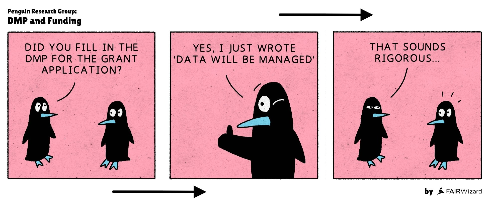

1 Introduction

Good data management in projects help ensure the project creates long-term value by making data readily Findable, Accessible, Interoperable, and Reusable (FAIR)(Wilkinson et al. 2016). Through a set of guiding questions, data management plans (DMPs) help project managers reflect and understand how their choices can underpin good data management for their project. They become aware of ethical obligations and the regulatory constraints, learn how data can be protected against loss, importance of collaboration agreements, etc.. DMPs are intended to be developed along the way of a project: project managers are encouraged to make an initial version of the DMP at an early stage of the project1 and revisit the DMP at regular moments as the project progresses.
In PARC, a two-tiered approach is implemented. An overarching PARC-level DMP and a PARC FAIR Data Policy have been developed by Work Package 7. They articulate the overarching principles and approaches that apply across PARC. For projects, this is complemented with a project-level DMP, which is compiled by project managers with the support of Work Package 7. The Data Stewardship Wizard (DSW) is the tool that Work Package 7 has selected to support project managers with the development of their project-specific DMP. DSW was compared to other solutions (e.g., DMP online, OpenAIRE Argos) and selected for several reasons, as follows. DSW creates maDMPs (maDMPs) fostering FAIRness of PARC data. One advantage of maDMPs is that they aren’t static (i.e., as and when datasets get generated/reused/FAIRified, their details can be added to the DMP). Moreover, the DSW allows users to easily view their progress in completing the DMP and provides a snapshot of the current degree of FAIR-ness of the DMP. Multiple people (who are given ownership, editing, commenting rights) can work on the template simultaneously making the filling of the template efficient. Furthermore, within WP7, we may implement further updates in the underlying questionnaire template, i.e., the knowledge model, in the DSW to reflect new knowledge. However, this will not affect the Project-specific DMP instances already generated, as these will be persistent (see section Creating a project-DMP from a Project Template).
To comply with the need for Findable, Accessible, Interoperable and Reusable (FAIR) research outputs as indicated in the PARC Data Management Plan (Brug et al. 2022) and PARC FAIR Data Policy (Brug et al. 2025), this user manual serves to help PARC project managers / leads to generate project-specific DMPs in the PARC Data Stewardship Wizard (DSW). The PARC DMP Knowledge Model (i.e., template of the questionnaire) has been customised2 to suit PARC’s ambitions and commitments in the Grant Agreement (GA) from a template proposed by Europe's distributed research infrastructure for life science data (ELIXIR). This DSW model and tool was originally prepared under the leadership of Dr Rob Hooft of the Dutch Techcentre for Lifesciences (DTL) and Dr Robert Pergl from the Faculty of Information Technology of Czech Technical University (CTU) under the support of ELIXIR CZ and ELIXIR NL.
DMPs generated in DSW are machine actionable (maDMP) which means that questions and answers can be shared and analysed by computers without the need for human intervention. The maDMP will help WP7 and the Project Managers to track progress during the Project lifecycle (from submission of project proposal to completion of the Project) and across the research data lifecycle: from creating/collecting/reusing data to data preservation and ensuring long-term access to the data. In this way we (PARC overall, WP7) can track progress towards the PARC FAIR Key Performance Indicators (KPIs) regarding the number of PARC datasets and the number of PARC datasets made FAIR. The PARC-DMP questionnaire has been designed to create learning opportunities as respondents work through the questions, and to increase awareness of the requirements for making data FAIR.
Completion of DMPs, allowing for a minimum level of FAIRness of Project (meta)data, should start immediately.
Note that case studies / clusters/ activities (those are not defined as PARC projects) but reusing or generating data will also be creating DMPs, and further alignment with the domains recognised in WP9 will be done.↩︎
The existing ELIXIR DMP template (Hooft et al. 2024) had more than 600 questions. The foreseen effort to complete all of these for each individual PARC project was considered to be way too high for PARC researchers. Therefore, in order to reduce the burden to PARC, the DMP team had weekly meetings in 2025 to discuss the relevance for PARC of the questions one- by-one, without compromising the FAIRness of research outputs and (future) possibility to include domain specific knowledge (e.g. via reference FAIR Implementation Profiles which have machine actionable resources to choose from). This was followed with a test/pilot phase involving three projects from WP5. Post the trial phase, further reduction of questions as well as modification and addition of questions to accommodate PARC project needs were made to create an updated version of the Knowledge Model.↩︎